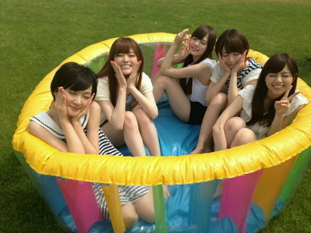

| 2013/06 21 Fri | 橋本奈々未 (´_ゝ｀) 夜明けが一番暗いんだよ ってエキストラの子役の子に言わ れたけどこの子はこの言葉をどう 解釈してどうして私に言おうと思 ったんだろうなぁと今でも考える しこの言葉でその子のことが忘れ にくくなった |
こんにちは！ななみです！
最近の私はアウトドア気味です(^-^)♪
こないだは若月と晩ご飯に行ったよー♪
おいしかった！
食べた後は運動ということで
お店出てから２〜３時間歩いた！
ゆっくりお散歩するのもかなり久しぶりで
すごくエネルギーチャージされました＼(^o^)／
若さまありがとー！
次は私のオススメのお店に連れて行きます(。・_・。)ノ
そして日曜日には
録音会がありました！
来てくれた皆さんありがとう(*^_^*)
録音した私の声が皆さんの励みになっていれば幸いですm(_ _)m♪
そして、この日で美雲が卒業でした。
美雲は乃木坂で初めてできた友達です。
オーディションの３次審査から最終審査までずっと一緒に居て、
２人揃って合格したときは本当にびっくりした！！
美雲は歌もダンスもすごくて絶対受かると思ってたけど
まさか自分が受かると思ってなかったからさ！
美雲がね、最終審査のときに
一緒に頑張ろうって
駄菓子くれたの今でもしっかり覚えてる。笑
そのときは嬉しくて食べれなくて
一週間くらい冷蔵庫で保管したよ。笑
後にパッキパキになったそれを食べたよ。笑
美雲は受験だったり大学生活とこの活動を並行して頑張っててすごいなぁと思ったよ
リハとか出れる時間が限られる中でも絶対本番までに仕上げてくるし。
同じ大学生として、そういう姿を見て改めて頑張ろうって刺激も受けた
進む道が違っても
美雲のこと応援してます！一緒に頑張っていきましょう！
ライブとか、ゆみことおいでよー！＼(^o^)／
へへ、みんな
私が大学生ってこと忘れてただろぉ。笑
そんな現役JDの私がJK久美役を務めさせて頂いた
BADBOYSJ が
ついに明日最終回です！！！
んー、早い。あっと言う間ですね。
こちらについては
映画の撮影の話も兼ねて明日ゆっくりブログ書きます。
最終回、皆さん是非是非観てください！！！！
そして今週から橋本
色んな雑誌に出させて頂いてます！
19日発売 少年マガジン
20日発売 ヤングジャンプ
20日発売 mina
21日発売 GiRLPOP
24日発売 UTB
24日発売 B.L.T
７月１日発売 20±SWEET
少年マガジンでは生駒まいやんさゆりん七瀬私で
わいわい休日気分で楽しく撮影しました(。・_・。)ノ
ヤングジャンプでは巻頭ソログラビアをさせていただいてます(*^_^*)
GANTZ最終回の号での巻頭...嬉しいです(;_;)(;_;)(;_;)
ヤングジャンプでは
今までの私にしては珍しい
夏らしい爽やかな感じで撮って頂きました(@^O^@)
新たなはしもとを見てください(。・_・。)ノ
そしてmina！
いつもの私よりだいぶ大人っぽくオシャレに撮ってもらえました♪♪
こちらも是非みてほしいなー(^-^)♪
他のものはまた追々話しますね(=゜ω゜)ノ
少年マガジンのオフショット！

みんないい笑顔(o^_^o)
日光が眩しかった...
ではまた明日更新しますね！